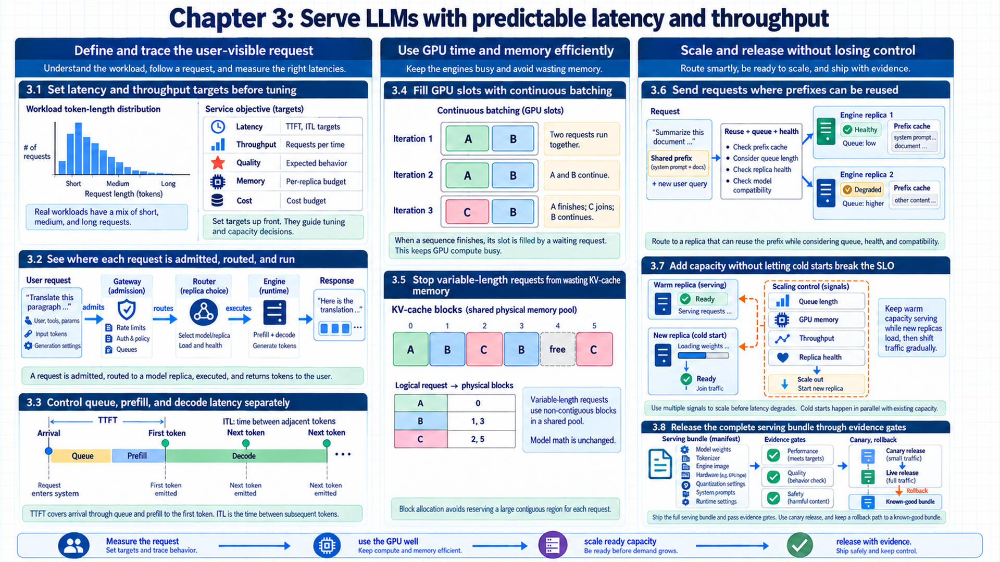
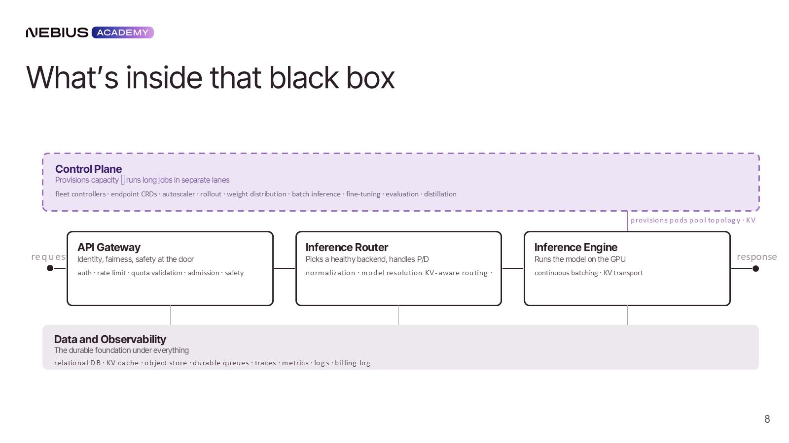
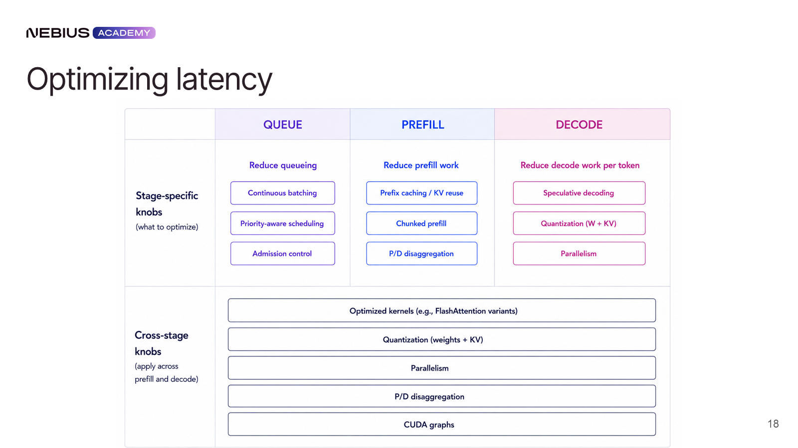
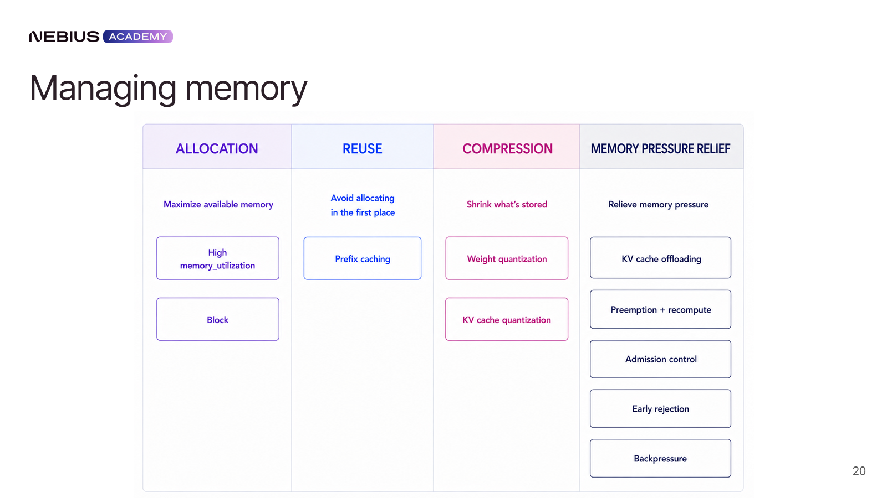
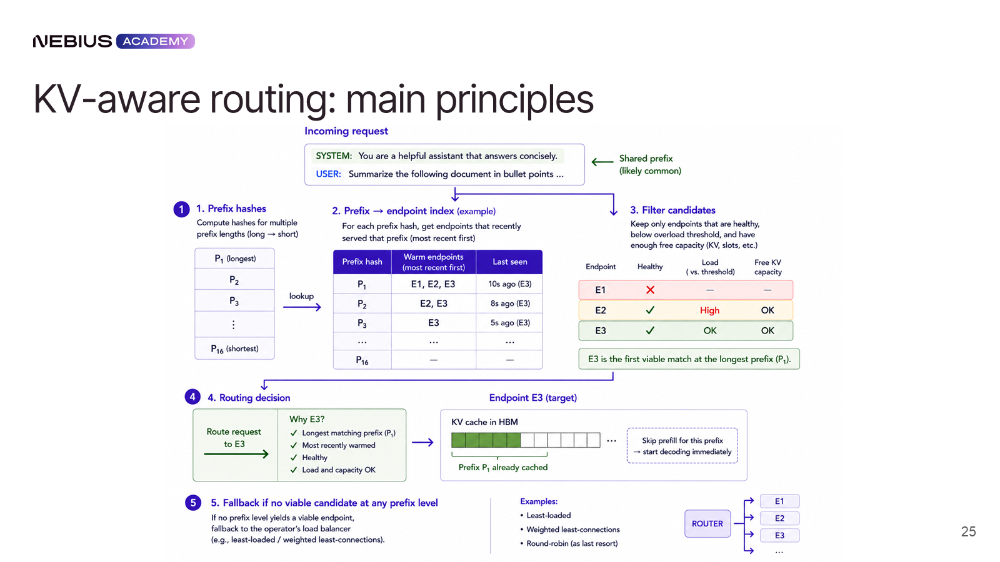
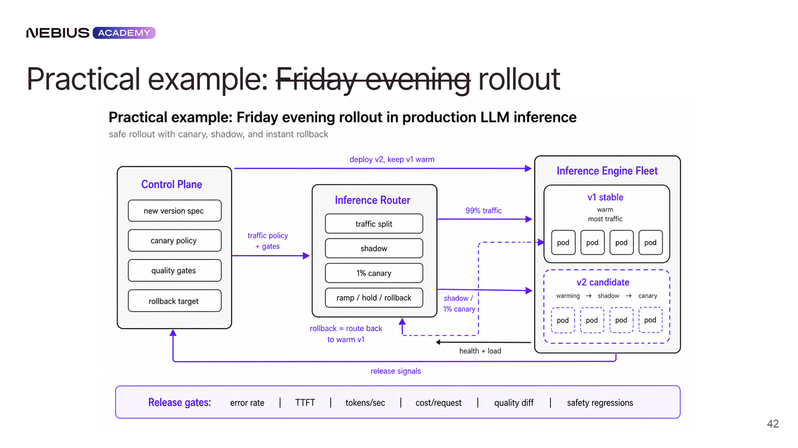

3 Serving LLMs with predictable performance
How does a versioned model become a responsive, efficient, and reversible user-facing service? Chapter 2 treated one coordinated training job whose ranks progress together. Serving replaces synchronized steps with variable-length requests, latency objectives, persistent KV-cache state, and rolling changes across a fleet.
The three panels connect the request path to batching and KV-cache state, then to the capacity and release controls that protect an interactive service.
Chapter map
3.1–3.3 Serving Objectives & Latency Stages: Define Time to First Token (TTFT), Inter-Token Latency (ITL), and throughput SLOs, and dissect compute-bound prefill vs. memory-bound decode latency.
3.4–3.5 Continuous Batching & PagedAttention: Explain iteration-level request scheduling in modern engines, and eliminate KV-cache memory fragmentation using non-contiguous physical block allocation.
3.6–3.8 Cache Routing & Deployment Gates: Route requests based on prefix caching and queue depth, autoscale GPU replicas while mitigating cold starts, and enforce blue-green serving-bundle release gates.

3.1 Setting latency and throughput targets
A checkpoint is only one ingredient of a user-facing release. The serving design cannot be optimized until success is stated in workload and business terms. Latency, throughput, memory, quality, and cost measurements give engine settings a clear objective.
Service Level Objective (SLO). a measurable target for service behavior over a stated window, such as a p95 time-to-first-token below a threshold.
Time to First Token (TTFT). elapsed time from request admission until the first generated token becomes available.
Inter-Token Latency (ITL). time between successive generated tokens during decode, commonly summarized as a distribution.
Throughput. completed useful work per unit time, such as output tokens per second per GPU or requests per second at a defined workload.
The business objective combines accepted work per GPU with latency, quality, safety, and availability. A benchmark that doubles tokens/s but violates the user’s ITL target does not improve that service.
\[ T_{\mathrm{request}} ≈ \mathrm{TTFT} + \left(N_{\mathrm{out}}-1\right) \cdot \mathrm{ITL} \tag{3.1}\]
Worked calculation: latency for a short interactive answer
Queue: The request waits 120 ms.
Prefill: A 2,000-token prompt takes 280 ms.
First token: Queueing, prefill, scheduling, and first-token work produce a measured TTFT of 400 ms.
Later tokens: The remaining 79 intervals average 22 ms, adding 1,738 ms.
Total: 400 + 79 × 22 = 2,138 ms.
Interpretation: Later-token decode dominates total time even though the first-token experience remains separately visible.
Conclusion: A single latency number hides the stage that limits the request.

Latency distributions reveal behavior that a mean can hide. The p95 or p99 TTFT exposes queue spikes and long prompts, while ITL exposes decode instability. A complete throughput measurement states prompt and output lengths, concurrency pattern, engine configuration, GPU type, quantization, and whether routing and gateway overhead are included.
3.2 Routing a request through the serving system
The serving objective identifies what users and operators measure. Those measurements cross several components, and each component owns a different decision. One request passes through admission, routing, and execution, while fleet management and evidence collection run around that data path.

The request path separates five concrete responsibilities:
- API gateway: authenticates identities, validates request shape, enforces quotas and rate limits, applies policy filters, and records billing identity.
- Inference router: selects an eligible engine replica using health, queue, model placement, and cache-state evidence.
- Inference engine: tokenizes, schedules batches, allocates KV-cache blocks, executes kernels, and streams generated tokens.
- Control plane: reconciles desired model deployments, provisions capacity, distributes weights, rolls versions, and coordinates recovery.
- Data and observability layer: stores request traces, metrics, logs, audit events, evaluation samples, and release evidence.
The router lies on the live request path; the control plane normally does not. Healthy replicas can continue serving during a temporary control-plane outage. Conversely, a router without fresh health or queue state can keep sending traffic to an overloaded or corrupt engine even when provisioning is healthy.
| Signal | First responsible component | Downstream action |
|---|---|---|
| Invalid token or exceeded quota | Gateway | Rejection before GPU work |
| Prefix already cached | Router | Selection of a replica with reusable KV state |
| KV blocks nearly exhausted | Engine | Admission throttling, eviction, or pressure reporting |
| Sustained queue growth | Router + control plane | Hotspot avoidance and capacity scaling |
| Candidate bundle fails quality case | Release gate | Promotion stops; stable version retains traffic |
One request-state trace
The gateway accepts request req-1842 for serving bundle sb-27 and records tenant and quota state. The router sees replicas A and B as compatible, but A’s health record is older than the 10-second freshness limit.
Replica A is excluded. Replica B receives the request, allocates KV blocks, streams tokens, and emits completion state. If every compatible health record is stale, the router returns a bounded unavailable response instead of guessing that an endpoint is healthy.
3.3 Separating prefill and decode latency
The request path identifies the engine as the component that turns admitted text into tokens. Inside the engine, queueing, prompt processing, and token generation stress different resources. The normal request path provides the baseline for stage-specific controls.
Prefill. the parallel forward pass over prompt tokens that computes hidden states and initializes key/value tensors for attention.
Decode. the autoregressive loop that produces one next token per sequence iteration while reading accumulated KV-cache state.
Prefill performs large matrix operations over many prompt tokens and is commonly compute-bound. Decode repeatedly streams model weights and KV state for a small amount of arithmetic per active sequence, so memory bandwidth and batch width often dominate. Queueing is controlled by admission and scheduler policy rather than a GPU kernel.

A useful latency diagnosis names the stage. Long queue delay suggests admission, capacity, or scheduling pressure; long prefill suggests very long prompts, poor prefix reuse, or insufficient prefill compute; high ITL suggests decode batching, memory bandwidth, cache pressure, or per-token synchronization.
Worked calculation: the same service under two request shapes
Long prompt: A 12,000-token prompt spends 1,450 ms in prefill and then emits 20 tokens at 18 ms between tokens.
Long answer: A 600-token prompt spends 110 ms in prefill and then emits 180 tokens at 24 ms between tokens.
Comparison: The first request is prefill-dominated; the second is decode-dominated even though its prompt is much smaller.
Control choice: Prefix reuse or more prefill capacity helps the first shape, while decode batch width and KV pressure are more relevant to the second.
Conclusion: Prompt and output distributions select the useful optimization; request count alone does not.
3.4 Increasing throughput with continuous batching
The request stages have distinct costs, while static batches force short sequences to wait for the longest member and leave holes after requests finish. Continuous batching recovers those slots through iteration-level admission and completion.
Continuous batching. a serving scheduler that adds waiting sequences and removes finished sequences between decode iterations.
The scheduler has a token budget, not merely a request-count limit. It chooses a mix of new prefill tokens and active decode tokens for the next iteration. Wider batches increase throughput by reusing weight reads across sequences, but they also increase queue time and can degrade ITL if the GPU is oversubscribed.
Chunked prefill. splitting a long prompt into smaller prefill chunks so decode work from other requests can be interleaved.
Chunked prefill protects interactive decode traffic from a single very long prompt. The trade-off is more scheduling overhead and potentially less efficient prompt computation. Its production behavior depends on the actual mix of prompt sizes and latency classes.
Continuous batching: purpose and limits
Works on: the serving-engine queue and active sequence set
Helps when: requests have different arrival times and output lengths
How it works: rebuilds the batch between iterations so completed sequences leave and waiting sequences enter
Other limits: larger batches improve throughput but can increase queue delay and per-token latency
Why it matters: it prevents variable-length traffic from wasting GPU slots behind finished or unusually long requests

Three-iteration batch trace
Iteration 1 admits requests A and B for prefill. Iteration 2 decodes A and B while request C waits because the token budget is full.
B finishes after iteration 2. Iteration 3 removes B, admits C’s prefill chunk, and continues A’s decode. The active set changes without waiting for A to finish.
The expected effect is fewer empty execution slots; the measured guardrails are queue delay and ITL for each latency class.
Code example: vLLM-style scheduler and cache-capacity settings.
# vLLM-style example: names and availability depend on engine version.
engine_args = {
"max_num_seqs": 128,
"max_num_batched_tokens": 8192,
"enable_chunked_prefill": True,
"gpu_memory_utilization": 0.90,
}Code walkthrough
Sequence ceiling: max_num_seqs bounds the number of active request sequences considered by the scheduler.
Token budget: max_num_batched_tokens caps prompt and decode tokens admitted to one iteration’s work.
Prefill policy: enable_chunked_prefill permits long prompts to be split so interactive decode work can interleave.
Memory reserve: gpu_memory_utilization controls how much device memory the engine may use for weights, KV blocks, and execution buffers.
Result: The four settings jointly determine admission, batch shape, queueing behavior, and KV-cache capacity; they cannot be tuned independently.
Limits: These names are vLLM-style APIs whose availability and exact semantics depend on engine version. Other engines expose the same mechanisms through different settings.
3.5 Reducing KV-cache fragmentation with PagedAttention
Continuous batching keeps execution slots occupied. Every active sequence also grows persistent attention state, and unpredictable lengths make contiguous preallocation wasteful. The memory estimate determines block allocation, prefix reuse, and whether compression or offload is useful.
Key-Value (KV) cache. the key and value tensors retained from earlier tokens so decode does not recompute attention state for the entire prefix.
\[ M_{\mathrm{KV}} = 2 \cdot B \cdot L \cdot T \cdot d_{\mathrm{KV}} \cdot b \tag{3.2}\]
Worked calculation: KV-cache memory for a long-context batch
Model: The decoder has 32 layers and a key/value width of 1,024 values per token.
Traffic: Sixteen active sequences each retain 8,000 cached tokens.
Precision: The FP16 or BF16 cache uses 2 bytes per stored element.
Bytes: Substituting the traffic, layer, dimension, and precision values yields 16,777,216,000 bytes.
Binary size: Approximately 15.6 GiB, before allocator metadata and model weights.
Conclusion: Context length and concurrency can consume more memory than the model weights left available for cache.

Paged attention. an attention-memory scheme that stores KV state in fixed-size non-contiguous blocks and maps logical token positions to physical blocks.
Paged allocation reduces internal fragmentation and makes partial growth, eviction, and sharing practical. Reference counts let several requests point to the same cached prefix blocks; a block is released only when no live sequence references it. Prefix caching is valuable for shared system prompts, few-shot examples, and repeated conversation prefixes.
For variable-length traffic, the uniform B × T factor becomes the sum of retained tokens across active sequences, Σᵢ Tᵢ. Grouped-query or multi-query attention reduces d with subscript KV because several query heads share fewer key/value heads. The estimate still needs allocator metadata and partially filled final blocks to explain measured memory.
Paged block-allocation trace
Sequences A and B share two immutable prefix blocks. A then owns three additional blocks, while B owns one additional block and one half-filled final block.
When A finishes, its three private blocks return to the free list; the shared prefix remains because B still references it. The half-filled block exposes bounded internal fragmentation without requiring one contiguous maximum-length reservation.
Quantizing KV state reduces bytes per element and can improve capacity, but conversion or unsupported-kernel overhead may offset the gain. Offloading moves colder state from GPU memory to host memory or storage; it extends capacity at the cost of transfer latency. Admission control and early rejection protect the cache before pressure becomes an out-of-memory failure.
3.6 Reusing prefixes with cache-aware routing
Paged allocation makes KV state reusable inside one engine. A fleet loses that benefit when a stateless load balancer sends every turn to a different replica. Stateful routing combines eligibility, cache affinity, and current load.
Round robin is a useful baseline only when replicas are equivalent and request history does not matter. LLM engines are not equivalent at a moment in time: they hold different model versions, prefix blocks, queue lengths, and free memory. Cache-aware routing first filters to healthy compatible endpoints, then estimates reusable prefix state and balances that benefit against queue pressure.

A cache hit avoids part or all of prefill, but an overloaded endpoint can erase the saved compute. The router therefore depends on timely engine state, bounded staleness, a fallback when state is missing, and observability that records why an endpoint was selected.
Eligibility is evaluated before preference: an endpoint must be healthy, serve the requested bundle, accept the request’s policy and context limits, and expose state no older than the freshness bound. Among eligible endpoints, estimated completion time combines queue delay, uncached prefill time, and decode time. Missing cache metadata contributes zero assumed reuse rather than an invented cache hit.
Worked calculation: cache affinity versus queue delay
Endpoint A: Can reuse 1,800 prompt tokens but has an estimated 450 ms queue.
Endpoint B: Has no prefix cache but an estimated 80 ms queue.
Measured prefill rate: The engine saves 0.18 ms per reused token, so A avoids about 324 ms of prefill.
Net comparison: A’s extra queue is 370 ms, larger than the 324 ms cache saving.
Decision: Endpoint B has lower estimated latency for this request; the result changes if queue or prefill cost changes.
Conclusion: Cache-aware routing is an optimization over measured time, not a rule that always chooses the largest prefix match.
3.7 Scaling capacity while limiting cold starts
Stateful routing uses the replicas that already exist. Sustained queue growth still requires the control plane to add capacity, yet loading large weights can take minutes. A stable scaler uses a smoothed demand signal, prepares storage and network paths, and records the cold-start transition.
Autoscaling on raw one-second metrics causes oscillation because one long prompt can temporarily consume free KV blocks or inflate TTFT. A stable controller uses a smoothed demand signal, a cooldown, and separate scale-up and scale-down policies. Queue depth, waiting tokens, available cache blocks, and SLO error are more relevant than CPU utilization.

Worked calculation: replica demand with warm-up delay and hysteresis
Measured capacity: One warmed replica sustains 6 requests/s for the target prompt-output mix while meeting both TTFT and ITL objectives.
Smoothed demand: The five-minute demand signal rises to 25 requests/s, so 25 ÷ 6 requires five warmed replicas after rounding up.
Current capacity: Three replicas are ready; the controller requests two more and keeps a sixth as failure headroom.
Warm-up timeline: Node allocation takes 70 seconds, image and weights take 95 seconds, kernel warm-up takes 25 seconds, and health stabilization takes 20 seconds: about 210 seconds before traffic.
Hysteresis: Scale-down begins only after demand stays below three-replica capacity for ten minutes, avoiding a reversal during the 210-second scale-up delay.
Conclusion: Autoscaling capacity depends on warmed service rate and response delay, not an instantaneous utilization sample.

Cold-start work includes allocating a node, pulling the engine image, loading weights, initializing kernels or graphs, warming caches, passing health checks, and joining the router. Node-local NVMe is the fastest ordinary weight source. Shared filesystems or enhanced object storage can feed many nodes; peer-to-peer distribution reduces a thundering herd against one storage endpoint.
Prefill/decode disaggregation. placing prompt processing and token decoding in different worker pools and transferring KV state between them.
Disaggregation lets compute-rich prefill workers and memory-bandwidth-oriented decode workers scale independently. Its success depends on a fast KV-transfer path, correct request handoff, compatible cache formats, and routing that keeps the two pools balanced. The transfer can erase the gain when interconnect latency or serialization is too high.
A measured decision compares the prefill/decode imbalance with KV-transfer cost. If separate pools save 90 ms of queue and compute time but serialization and transfer add 120 ms at the target context length, the combined request is slower and the unified engine remains the better placement for that workload.
3.8 Releasing serving bundles through deployment gates
The control plane can now add and specialize capacity. A production change remains unsafe if only the weight identifier is versioned or only HTTP health is checked. A safe release moves the complete serving bundle through performance, quality, safety, and rollback gates.
Serving bundle. the immutable combination of weights, tokenizer, engine image, hardware compatibility, quantization, prompt defaults, runtime configuration, and release metadata.

A tokenizer change, quantized kernel, sampling default, structured-output parser, or engine version can change behavior while weights remain unchanged. Bundle identity attaches benchmark and evaluation results to the actual deployable unit.
| Gate | What it catches | Evidence |
|---|---|---|
| Compatibility | Missing kernels, unsupported GPU, schema mismatch | Startup and interface tests |
| Performance | TTFT/ITL/throughput or memory regression | Fixed, ramp, spike, replay, and soak tests |
| Quality | Reasoning, factuality, or structured-output regression | Golden prompts and held-out evaluator cases |
| Safety/domain | Policy or customer-specific failure | Curated regression suites and red-team cases |
| Runtime | Unhealthy rollout, missing telemetry, failed rollback | Canary/shadow traces and rollback drill |

Blue/green or canary deployment keeps the stable bundle available while a candidate receives synthetic, shadow, or limited live traffic. The release gate compares performance and quality on equivalent workload slices. Promotion is reversible until the candidate has enough evidence; rollback restores the whole bundle rather than only the weights.
Worked calculation: a canary promotion decision
Comparable slice: Stable and candidate bundles each receive replayed requests stratified by prompt length, output length, tenant class, and retrieval use.
Performance gate: Candidate p95 TTFT is 4% lower and p95 ITL is 2% higher; both remain inside the predefined non-regression bounds.
Quality gate: The candidate passes 499 of 500 critical cases, but the single failure is an authorization case with a zero-tolerance stop condition.
Decision: Traffic returns to the stable bundle and the entire candidate bundle remains available for reproduction; favorable aggregate latency does not override the critical failure.
Conclusion: A canary decision combines equivalent workload slices with explicit stop conditions and whole-bundle rollback.
Chapter 3 summary
Core mechanisms: Iteration-level continuous batching in vLLM/SGLang; PagedAttention non-contiguous KV-cache memory allocation; prefix-aware request routing.
Governing tradeoffs: TTFT vs. ITL latency optimization; KV-cache memory allocation limits vs. request concurrency throughput; aggressive prefetching vs. memory fragmentation.
Failure modes & defenses: Blue-green serving bundle deployments; automated latency and accuracy release gates.
Carry-forward result
The serving system now has an owned request path, stage-specific performance model, managed KV state, cache-aware routing, cold-start plan, and immutable release bundle.
The next chapter builds the evidence system that decides whether this apparently healthy service is also correct.